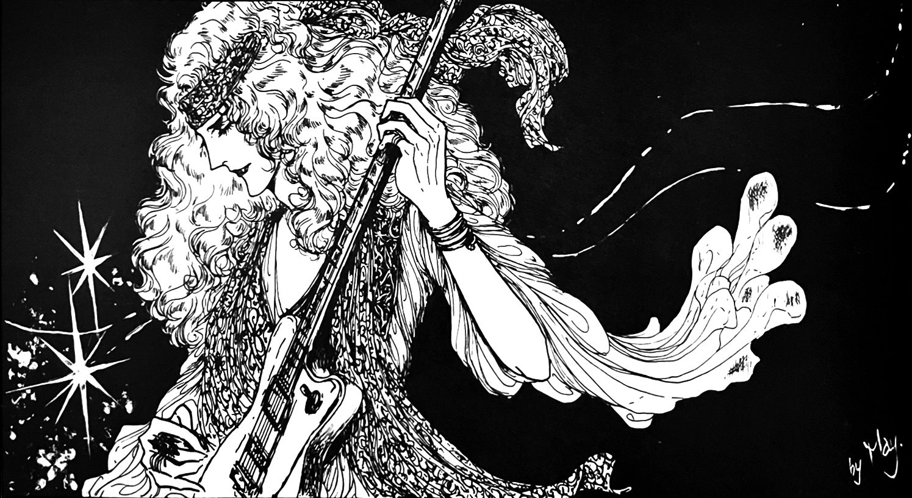

"We were a group of friends who loved manga and rock, looking for an outlet for our energy, talents, and fandom. But joining a fanclub was boring, and the usual manken doujin groups weren't cutting it, so we decided to try our hand at creating something new for ourselves, something that wasn't merely a doujinshi or fan newsletter. So we, a bunch of pioneers (?) and complete unknowns even in the world of amateur doujins at the time, created our own magazine called Lucifer, piggybacking on what we saw. We forced our close friends to buy it, and sent it to manga artists, record companies, and the like, not expecting anyone to even look at it. It was just a little bit of fun, something we did on a whim between submissions to other publications. And likewise, just for fun we came up with the name of our circle, the fantastical "Rosicrucians" (after the name of the secret society of Christian Rosenkreuz, my idol).

The Rosicrucians went through many iterations and released many publications with different themes. The initial rock-centric iteration was active from 1975 to 1977, with headquarters in Nagoya. After a hiatus, they reformed as R•C II and then again as R•C III and IV. The initial Rosicrucians numbered thirteen and contained a lot of familiar names—Shion Yoshimura, head editor of Manken Queen; Nachi Mikami; the prolific Yuri Kitagawa; and Yayoi Takeda (who was the illustrator of the front cover for Queen Times vol. 4, among other things for the QFCJ). R•C was a very talented group who published works with darker and more unique themes than some other doujin groups of the time. Their rock publications included Lucifer and Jesus, as well as an Anthology published in the 80s as a retrospective. Their declared "main band" was Queen.
Lucifer contained not only illustrations but rock concert reports, reviews, and the like. It was published monthly through 1977. Several volumes from 1975 and 1976 were Queen-centric, although tidbits were be scattered throughout.
私はこの同人誌のクイーン関連の号、特に1昭和５０の8月号と昭和５１の４月、５月号を探しています。もしお持ちで売却にご興味があれば、メールでご連絡ください。
Lucifer — September 1976 — Bowie feature
Anthology — January 1980 — retrospective